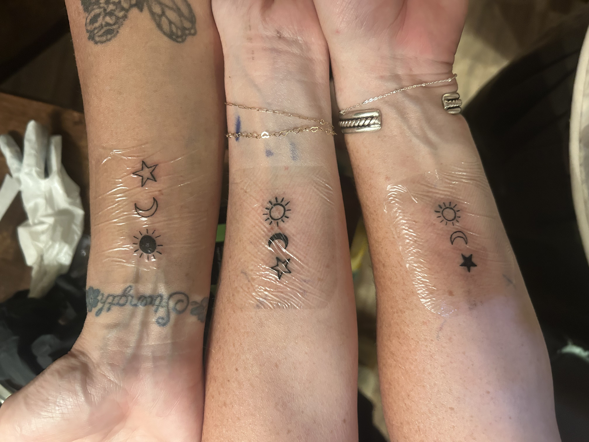

WELCOME
My name is Parson Sweeney I am a computer science major who is thinking about adding machine learning as
well. and I am learning how to develop html, This is my first from scratch self made web document that is
all about me!! the navigation bar above should
make finding specific information or places wihtin this document a little easier so please use it.
Athletic Skills
- soccer
- climbing
- snowboarding
- backpacking
+
- running
Nieche Skills
- carpentry(I have been working construction fro 3 years now)
- slacklining
- gaming
- cooking
- adaptability
- tattoo artistry
The Photo Gallery
Within my travel I do my best to unplug from the digital world but ofcourse I always get at least a
couple of images.

The very arch I just went and repelled with my friends
all of the polaroids I took with my friends while we were camping in utah

This sun moon and star tatto is the most recent tat I did, I put it on my mom and her 2 sisters
My Projects
Basebaords with the Turkeys: